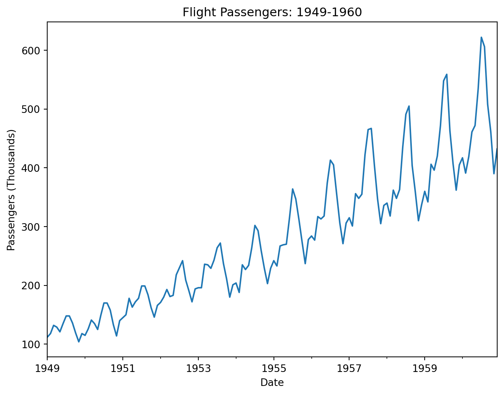
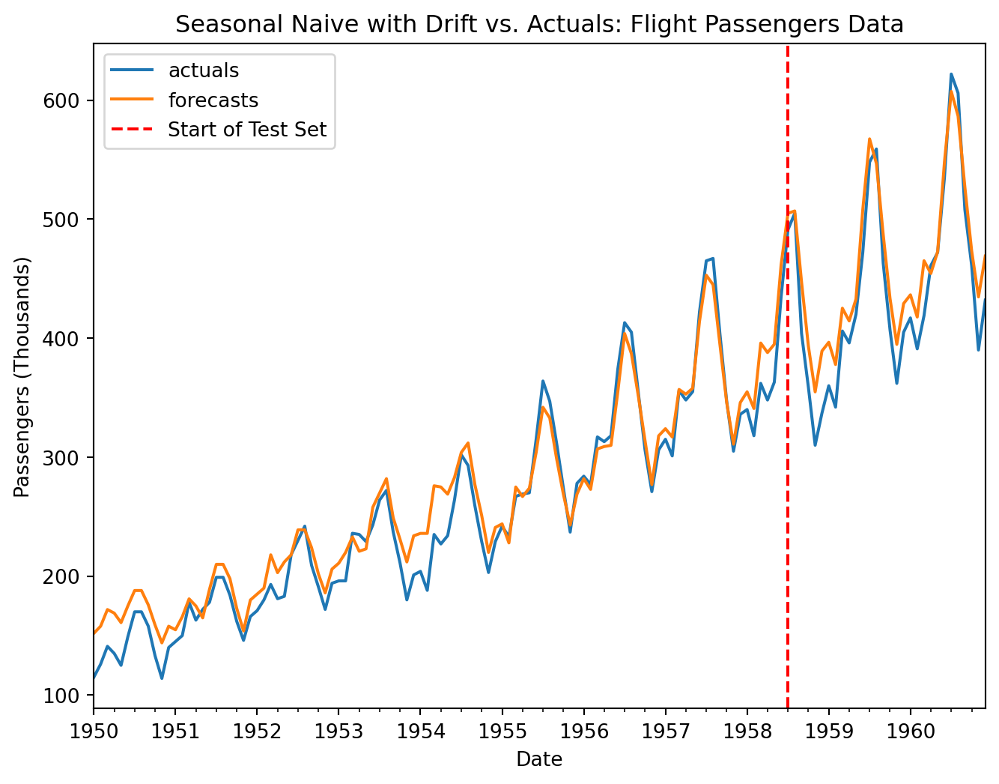

#Necessary imports
import numpy as np
import pandas as pd
import matplotlib.pyplot as plt
import seaborn as sns
#Load flights data into 'flights' dataframe
flights = sns.load_dataset("flights")
#You will often need to convert your data into a more usable form, usually with some type of time index.
#This code converts the 'year' and 'month' columns into a single datetime column then sets that column as our index.
flights['date'] = pd.to_datetime(
flights['year'].astype(str) + '-' + flights['month'].astype(str), format='%Y-%b'
)
flights = flights.set_index('date')
#Separate the target feature into a series. We no longer need the month/year columns since our index already has that information.
y = flights['passengers']Naive Forecasts with Seasonality & Drift
Forecasting
Python
Baseline Models
Time Series Modeling
Naive Forecasts
How to account for both seasonal variations and trend in a naive forecast
Introduction
Naive forecasting models are among the simplest ways to model a time series. They are often among the first models you will create during a forecasting project, and they serve as a benchmark to which more advanced models can be compared. It is their simplicity that makes them such a good starting point in the forecasting process.
However, naive forecasts can be made more effective and powerful than their name suggests. As discussed in past articles, simple naive forecasts can be adjusted to account for seasonality and trend.
But, what do you do if your time series contains both seasonal variations and trend? This is often the case in the real world. Thankfully, naive forecast models can take both of these time series structures into account. The end result is a simple, explainable, but, in many cases, surprisingly effective baseline model.
In this article, we will walk through an example of how to set up a naive forecasting model with seasonality and drift (trend) in Python.
Python Example
We will start by importing the necessary packages and loading the flights dataset from seaborn package. This dataset is a classic time series dataset. The data has both strong seasonality and a consistent trend, making it a perfect time series to practice with.
In a real-world forecasting project, we would do a great deal of exploration of our dataset. In this case, however, we will just plot a simple line chart to look at the structure of our time series.
#The easiest and quickest way to visualize the data is with the .plot method. This gives you a quick line graph.
y.plot(figsize=(8,6))
plt.title('Flight Passengers: 1949-1960')
plt.ylabel('Passengers (Thousands)')
plt.xlabel('Date')
plt.show();
The repeating, consistent peaks and valleys in our data are the seasonal variations. These fluctuations represent the times of year when flight passenger numbers rose and fall.
The overall increase over time in the number of passengers represents the trend in the time series.
Clearly, whatever forecast we build from this data must take these factors into account if it is to be effective.
Let’s walk through the steps to make our naive forecasting model with both seasonality and trend in the next code cell. Refer to the comments for detailed explanations of each step.
First, let’s take a moment to split our dataset into train and test sets. This ensures we have a portion of our data set aside to assess how well our model performs on data it has not seen before.
from sklearn.model_selection import train_test_split
y_train, y_test = train_test_split(y, shuffle=False, train_size=.8) #Notice, the "shuffle" parameter is set to false here. It defaults to true.
#We will reserve 80% of our data for training and set aside the remaining 20% for testingThe forecast itself we will perform with a layered approach. First, we will build a seasonal naive forecast, using a yearly seasonal period to generate our monthly fitted values and forecasts. Then we will add in our drift to account for the trend in the data.
Let’s proceed with taking our last seasonal period from our training set, and using it to generate a forecast for the duration of our test period.
#We use the `.shift()` method to generate our fitted values, then we drop the resulting null values caused by the shift
seasonal_naive_fitted = y_train.shift(12).dropna()
#Now, we will save the last 12 values of our train set. These will become our initial forecast for our test set.
last_seasonal_period = y_train[-12:]
#Note, the `np.tile` function is used here to take the 12 values in our last seasonal period and apply them across our test set, even though our test set may not be divisible by 12.
seasonal_naive_forecast = np.tile(last_seasonal_period, int(np.ceil(len(y_test) / 12)))[:len(y_test)]
#Convert array into series with same index as y_test
seasonal_naive_forecast = pd.Series(seasonal_naive_forecast, index=y_test.index)
seasonal_naive_forecast.head(12)date
1958-08-01 467
1958-09-01 404
1958-10-01 347
1958-11-01 305
1958-12-01 336
1959-01-01 340
1959-02-01 318
1959-03-01 362
1959-04-01 348
1959-05-01 363
1959-06-01 435
1959-07-01 491
dtype: int64Okay, now we will move forward with calculating how much drift to add into each step of our fitted values and forecasts.
# Compute drift using training data only
#Note what is happening here. You're taking the difference between the final instance and the first instance in the training set,
#then dividing by the length of the training set (minus 1). This gives you the "average change" across the entire training set.
drift = (y_train.iloc[-1] - y_train.iloc[0]) / (len(y_train) - 1)
drift np.float64(3.324561403508772)We can ascertain from this that, on average, our time series data increased by approximately 3 thousand flight passengers per month. We will now add this drift value to each fitted value we calculated earlier, then we will use a step column to multiply the drift value and add it to each step in the test set. This allows the drift to accumulate properly as it extends into “the future”.
#First, we add the drift to our fitted values.
fitted_values_with_drift = seasonal_naive_fitted + 12 * drift #The 12 here is due to the yearly seasonal period of our monthly data
#Then we add the drift to our forecast values.
#This code adds a "step" column to our forecasts, then multiplies the drift value by the step of the forecast. This way, the drift accumulates properly.
forecast_values_with_drift = pd.DataFrame(
seasonal_naive_forecast.copy(),
index=seasonal_naive_forecast.index,
columns=['forecast']
)
forecast_values_with_drift['step'] = (np.arange(1, len(forecast_values_with_drift) + 1) + 11) #This computes the step column, but note that we add 11 to ensure that it accumulates the drift for the 12 months that elapsed between the start of the final seasonal period in the train set and the start of the test set.
#This takes the step column, multiplies it by the drift value, and adds it to the forecast
forecast_values_with_drift['forecast'] = (
forecast_values_with_drift['forecast']
+ forecast_values_with_drift['step'] * drift
)
#We can revert back to a series since we no longer need step column
forecast_values_with_drift = forecast_values_with_drift['forecast']
#Check the resulting output to ensure it makes sense
forecast_values_with_driftdate
1958-08-01 506.894737
1958-09-01 447.219298
1958-10-01 393.543860
1958-11-01 354.868421
1958-12-01 389.192982
1959-01-01 396.517544
1959-02-01 377.842105
1959-03-01 425.166667
1959-04-01 414.491228
1959-05-01 432.815789
1959-06-01 508.140351
1959-07-01 567.464912
1959-08-01 546.789474
1959-09-01 487.114035
1959-10-01 433.438596
1959-11-01 394.763158
1959-12-01 429.087719
1960-01-01 436.412281
1960-02-01 417.736842
1960-03-01 465.061404
1960-04-01 454.385965
1960-05-01 472.710526
1960-06-01 548.035088
1960-07-01 607.359649
1960-08-01 586.684211
1960-09-01 527.008772
1960-10-01 473.333333
1960-11-01 434.657895
1960-12-01 468.982456
Name: forecast, dtype: float64We have successfully created our naive forecast with seasonality and drift. Let’s now use a simple line chart to assess visually how well our forecast performs.
#Combine fitted values, forecast values, and actual values into one DataFrame for easier visualization
combined_forecast = pd.concat([fitted_values_with_drift, forecast_values_with_drift], axis=0)
combined = pd.concat([y, combined_forecast], axis=1).dropna().rename(columns={'passengers': 'actuals', 0: 'forecasts'})
combined.plot(figsize=(8, 6))
plt.axvline(x=y_train.index[-1], c='red', linestyle='--', label='Start of Test Set')
plt.title('Seasonal Naive with Drift vs. Actuals: Flight Passengers Data')
plt.ylabel('Passengers (Thousands)')
plt.xlabel('Date')
plt.legend()
plt.show();
Based on this simple visual, we can see that our model did a fair job at approximating the seasonal variations and trend of the data set. We have successfully created a strong baseline model to which more advanced models could be compared.
Conclusion
To sum up, naive forecasting models can be adjusted to account for seasonality, trend, or both. By creating a seasonal naive forecast, computing drift, and then adding the drift value at each subsequent step of your forecast, you can create an effective baseline forecasting model that is easy to understand and not resource-intensive.
On important limitation of this type of forecast is that it assumes a constant trend (additive) throughout the time series and into the future. If the trend was getting stronger or weaker over time, that would not be fully captured in this type of forecast.